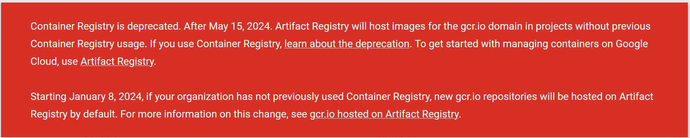

PetClinic con Docker
Para realizar el despliegue de PetClinic como contenedor:
-
Primero, tenemos que dockerizar la aplicación.
-
Luego, publicar la imagen de contenedor en un registro como DockerHub o Google Artifact Registry (antes Container Registry).
-
Y por último, ejecutar el contenedor en la instancia de despliegue.
El contenedor para el despliegue de PetClinic se construirá a partir de un Dockerfile que definirá cómo se construye la imagen del contenedor, y cómo se ejecuta la aplicación en el contenedor. Utilizará la base de datos H2 embebida. Este contenedor para el despliegue de PetClinic será independiente de la configuración Dev Containers que ya posee el proyecto PetClinic, así como del entorno docker-compose. Se podría haber optado por desplegar PetClinic con docker-compose, pero en este caso vamos a desplegarlo como un contenedor independiente.
A continuación se describe cómo crear un contenedor Docker de la aplicación PetClinic. Los pasos se realizan en local, y al final configuraremos el pipeline de Jenkins para que se realicen automáticamente.
|
Para trabajar con contenedores Docker en tu equipo local, debes tener Docker instalado. Recuerda iniciar Docker Desktop en Windows, o iniciar el servicio Docker en Linux o Mac. Comprueba que está funcionado ejecutando el comando |
|
Hasta ahora nos estamos basando en el proyecto PetClinic original (genéricamente llamado upstream) disponible en GitHub. En esta sección necesitarás poder hacer cambios sobre el mismo: básicamente vamos a añadir al proyecto un archivo |
Creación del Dockerfile multi-stage
Para construir aplicaciones Maven con Docker y luego crear el contendedor de Docker que empaquete la aplicación, la opción recomendada es usar Multi-Stage Builds en tu Dockerfile, de manera que:
-
Una primera fase o stage construye el
.jara partir de una imagen de Maven, como por ejemplomaven:3.9-eclipse-temurin-17-focal -
Y luego en una segunda fase, ese
.jarlo copia en el contenedor basado en la imagen Alpine (slim) con Java 17, que es el entorno de ejecución Java necesario.
La documentación de PetClinic indica cómo construir el contenedor usando Spring Boot build plugin. A nosotros nos interesa ver cómo hacerlo de forma genérica para cualquier aplicación Java basada en Maven. Vamos a definir el siguiente archivo Dockerfile que debe estar en la carpeta raíz del proyecto PetClinic:
FROM maven:3.9-eclipse-temurin-17-focal AS build (1)
WORKDIR /app
# First copy only the pom file. This is the file with less change
COPY ./pom.xml .
# Download the package and make dependencies cached in docker image
RUN mvn -B -f ./pom.xml -s /usr/share/maven/ref/settings-docker.xml clean dependency:go-offline
# Copy the actual code
COPY ./ .
# Then build the code
RUN mvn -B -f ./pom.xml -s /usr/share/maven/ref/settings-docker.xml clean package
# Start with a base image containing Java runtime
FROM maven:3.9.6-eclipse-temurin-17-alpine (2)
# Make port 8080 available to the world outside this container
EXPOSE 8080
# The application's jar file
ARG JAR_FILE=target/*.jar
# Copy the application's jar to the container
COPY ${JAR_FILE} app.jar
# Run the jar file
ENTRYPOINT ["java","-jar","/app.jar"]| 1 | Primera fase o stage de build, construye la aplicación llamando a los goals clean package de Maven. Contiene los pasos básicos para construir una aplicación Java basada en Maven. Dicha construcción la divide en dos partes, primero copia el pom.xml y descarga las dependencias con dependency:go-offline, y luego copia todos los fuentes y construye el proyecto con package. De esta forma se optimiza la reconstrucción del contenedor ya que la descarga de dependencias es una etapa que dura varios minutos. |
| 2 | Segunda fase, crea una imagen basada en la imagen Alpine de Java 17. Esta imagen está basada en el proyecto Alpine Linux que es una distribución mucho más pequeña (~5MB), y por tanto genera imágenes más pequeñas en general. Contiene los pasos básicos para ejecutar una aplicación String Boot en un contenedor: partiendo de una imagen alpine (slim), copia el archivo target/*.jar en el contenedor con el nombre app.jar y lo ejecuta mediante el comando ENTRYPOINT para que no haya ninguna shell sobre el proceso java. |
Construye el contenedor con docker build, y ten paciencia, tardará varios minutos!!!
docker build -t petclinic-docker .|
Si estás trabajando en Windows, la construcción podría dar un error por problemas de codificación de los saltos de línea diferentes entre Windows y Linux. Para resolverlo, sustituye en la primera fase del Dockerfile la linea de construcción que llama a
|
Tras la construcción de la imagen, prueba la ejecución del contenedor en local:
docker run -it -p 8080:8080 -t petclinic-dockerComprueba que se ha iniciado la aplicación en http://localhost:8080.
Para el contenedor con CTRL+C.
Una vez creada la imagen con docker build y probada su ejecución con docker run, el siguiente paso será publicar la imagen en un registro de contenedores, mediante docker push. Podemos usar DockerHub pero en este caso vamos a usar Google Cloud Artifact Registry.
Autenticación en Artifact Registry
Para poder hacer push de la imagen del contenedor a un registro de contenedores, como Google Artifact Registry, debemos tener permisos de escritura, y por tanto debemos autenticarnos en el servicio Artifact Registry.
|
Container Registry era hasta ahora el servicio de Google Cloud para el registro de contenedores, pero ha sido reemplazado por Artifact Registry. Aunque Container Registry sigue funcionando, se recomienda usar Artifact Registry. Si deseas ampliar información, consulta la Transición desde Container Registry

Fig. 2. Container Registry is deprecated
|
La autenticación para Docker de Artifact Registry permite conectar al registro de contenedores con tus credenciales, y hacer push y pull de tus imágenes. Existen varios métodos de autenticacion, vamos a usar la clave de cuenta de servicio.
|
Clave de cuenta de servicio: Es un par de claves administrado por el usuario que puedes usar como credencial para una cuenta de servicio. Debido a que la credencial es de larga duración, es la opción menos segura de todos los métodos de autenticación disponibles. |
-
Configura los permisos necesarios para acceder al registro utilizando una clave de cuenta de servicio (JSON key file) como método de autenticación:
-
En la Consola Google Cloud, seleccionar el proyecto Google Cloud.
-
En el menú de navegación seleccionar
IAM y administración | Cuentas de servicio. -
Seleccionar
Crear cuenta de servicio. -
Darle un nombre (p.e.
artifact-registry) -
Seleccionar "Crear y continuar".
-
En el paso
Conceder a esta cuenta de servicio acceso al proyectodel asistente, seleccionar el rolAdministrador de Artifact Registry. Continuar y Listo. -
Editar la Cuenta de servicio. En la sección
ClavesseleccionarAgregar clave | Crear nueva clave. -
Dejar
JSONen el tipo de clave. -
Seleccionar
Crear. A continuación se descargará la clave privada.
-
-
Guarda el archivo
.jsonen la carpetasecretde tu proyecto PetClinic.
|
No olvides añadir la carpeta |
-
Use the service account key as your password to authenticate with Docker. Sustituye
keyfile.jsonpor el nombre de tu archivo de credenciales:
cat keyfile.json | docker login -u _json_key --password-stdin https://LOCATION-docker.pkg.dev (1)| 1 | LOCATION es la ubicación regional o multirregional del repositorio en el que se almacena la imagen. Por ejemplo, us-east1 para la región Este de Estados Unidos (recomendado). Para otras localizaciones, consulta las Ubicaciones de Artifact Registry |
Activación de la API y creación del repositorio
Para poder publicar la imagen en Artifact Registry, primero debemos activar la API de Artifact Registry en nuestro proyecto GCP, y luego crear un repositorio en el que almacenar la imagen del contenedor.
-
Habilita la API de Artifact Registry en tu proyecto GCP, accediendo a la URL https://console.cloud.google.com/apis/library/artifactregistry.googleapis.com y habilitando la API.
-
Crea un nuevo repositorio para almacenar las imágenes de Docker:
-
Abre la página Repositorios en la consola de Google Cloud.
-
Haz clic en Crear repositorio.
-
-
Especifica
docker-repocomo el nombre del repositorio. -
Elige
Dockercomo formato yEstándarcomo modo. -
En Tipo de ubicación, selecciona
Regióny, luego, elige la ubicaciónus-east1. -
En la sección Encriptación, deja la opción predeterminada: Clave administrada por Google. Deja las opciones predeterminadas en el resto de opciones.
-
Haz clic en Crear.
Publicación de la imagen en el repositorio
Antes de enviar la imagen de Docker a Artifact Registry, debes crearla con el nombre del repositorio, o bien simplemente etiquetarla si ya la has creado previamente.
-
Construye o etiqueta la imagen: Para construir la imagen:
docker build -t us-east1-docker.pkg.dev/PROJECT/docker-repo/petclinic:1.0 .O bien, para etiquetar la imagen ya existente:
docker tag petclinic-docker:latest us-east1-docker.pkg.dev/PROJECT/docker-repo/petclinic:1.0En ambos casos, el nombre de la imagen está compuesto por varios elementos:
-
us-east1es la ubicación del repositorio. -
docker.pkg.deves el nombre de host para el repositorio de Docker que creaste. -
PROJECTes el nombre del proyecto de Google Cloud, escribe lo que corresponda. -
docker-repoes el nombre del repositorio que creaste. -
petclinices el nombre de imagen que deseas usar en el repositorio. El nombre de la imagen puede ser diferente del nombre de la imagen local. -
1.0es la etiqueta que agregas a la imagen de Docker. Si no especificaste una etiqueta, Docker aplicará la etiqueta predeterminadalatest.
-
Publica la imagen con
docker push:
docker push us-east1-docker.pkg.dev/PROJECT/docker-repo/petclinic:1.0-
Comprueba que se ha publicado correctamente.
Despliegue manual del contenedor
La imagen del contenedor PetClinic ya está disponible de manera privada en el repositorio de Docker de nuestro proyecto GCP. Utilizando nuestras credenciales podremos hacer docker pull de dicha imagen para descargarla en cualquier máquina y ejecutarla con docker run.
docker pull us-east1-docker.pkg.dev/PROJECT/docker-repo/petclinic:1.0
docker run -p 8080:8080 -t --name petclinic us-east1-docker.pkg.dev/PROJECT/docker-repo/petclinic:1.0Si conectas a la instancia de despliegue que creamos al principio de esta actividad, y ejecutas los comandos docker pull o docker run anteriores, dará un error de autenticación:
Para arreglarlo, habrá que copiar en la máquina de despliegue el archivo de credenciales .json con premisos sobre Artifact Registry. A continuación se muestran los comandos necesarios para ello. Una vez disponible este archivo en la instancia de despliegue, ejecuta el comando docker login y tras ello ya si podremos hacer docker pull y docker run.
# Copiamos el archivo de credenciales
scp -i ~/.ssh/id_rsa ./secret/file.json ubuntu@DNS_MAQUINA_DEPLOY:~/keyfile.json
# Conectamos a la máquina de despliegue
ssh ubuntu@DNS_MAQUINA_DEPLOY
# Autenticamos docker contra Container Registry
cat keyfile.json | docker login -u _json_key --password-stdin https://us-east1-docker.pkg.dev
# Variable de entorno con el nombre del proyecto
GOOGLE_CLOUD_PROJECT=cnsa-2024
# Descargamos la imagen
docker pull us-east1-docker.pkg.dev/$GOOGLE_CLOUD_PROJECT/docker-repo/petclinic:1.0
# ejecutamos el contenedor
docker run -d -p 8080:8080 -t --name petclinic us-east1-docker.pkg.dev/$GOOGLE_CLOUD_PROJECT/docker-repo/petclinic:1.0|
Si la ejecución de |
Es posible que la ejecución del contenedor de un error, porque el puerto 8080 ya esté en uso con la aplicación PetClinic que desplegamos en la sección anterior (sin Docker). En ese caso, el error será algo así como:
Error starting userland proxy: listen tcp 0.0.0.0:8080: bind: address already in use.Para solucionarlo, bien detén el proceso java que está corriendo con la aplicación PetClinic tal y como la desplegamos en la sección anterior (if pgrep java; then pkill java; fi
docker run -p 80:8080 -t --name petclinic us-east1-docker.pkg.dev/$GOOGLE_CLOUD_PROJECT/docker-repo/petclinic:1.0Pero ten en cuenta que si el contenedor ya se ha creado y no ha podido iniciarse porque el puerto 8080 estaba ocupado, si intentas volver a crearlo con docker run te dirá que el contenedor ya existe. Revisa si está ya creado con docker ps -a, y en ese caso inícialo con docker start.
ubuntu@web-deploy-vm-tf:~$ docker ps -a
CONTAINER ID IMAGE COMMAND CREATED STATUS PORTS NAMES
3ed683cccecd us-east1-docker.pkg.dev/cnsa-2024/docker-repo/petclinic:1.0 "java -jar /app.jar" 56 seconds ago Exited 0.0.0.0:8080->8080/tcp, :::8080->8080/tcp petclinic
ubuntu@web-deploy-vm-tf:~$ docker start petclinic
petclinicYa puedes comprobar en tu navegador que la aplicación PetClinic se está ejecutando en el puerto 8080 de la máquina de despliegue.
PetClinic con Docker en Jenkins
Hasta ahora hemos realizado todos los pasos de construcción, prueba y despliegue de PetClinic como contenedor manualmente. A continuación, vamos a automatizar en Jenkins todo el proceso, cuyas principales tareas son:
Define un nuevo proyecto en Jenkins de tipo pipeline, con el nombre PetClinic-Docker-abc123 sustituyendo abc123 por nuestro nombre de usuario. Son necesarios 3 fases (stages) en el pipeline: build image, push image, y deploy container.
Construcción y despliegue del contenedor
Comenzamos por la construcción de la imagen:
pipeline {
agent any
environment {
GOOGLE_CLOUD_PROJECT = "cnsa-2024" // "you-gcp-project"
APP_NAME = "petclinic" // "you-app-name"
REPO_NAME = "docker-repo" // "your-repo-name"
REPO_LOCATION = "us-east1" // "your-repo-location"
IMAGE_NAME = "${REPO_LOCATION}-docker.pkg.dev/${GOOGLE_CLOUD_PROJECT}/${REPO_NAME}/${APP_NAME}"
}
tools {
maven "Default Maven"
}
stages {
stage("Checkout code") {
steps {
// checkout scm
git branch:'main', url:'https://github.com/ualcnsa2024/spring-petclinic.git' (1)
}
}
stage('Compile, Test, Package') {
steps {
sh "mvn clean package -Dcheckstyle.skip -Dtest=!PostgresIntegrationTests*"
}
post {
success {
junit '**/target/surefire-reports/TEST-*.xml'
archiveArtifacts 'target/*.jar'
}
}
}
stage("Build image") { (2)
steps {
script {
dockerImage = docker.build(
"${IMAGE_NAME}:${env.BUILD_ID}",
"--rm -f Dockerfile ."
)
}
}
}
}
}| 1 | En la fase de Checkout code se clona el repositorio de GitHub con el código fuente de PetClinic. Sustituye la URL del repositorio por la de tu fork. |
| 2 | En la fase de Build image se construye la imagen del contenedor a partir del Dockerfile que se encuentra en la raíz del proyecto. La imagen se etiqueta con el número de build, para poder identificarla en el registro. |
|
Si consultas la salida por consola de la ejecución del pipeline, verás que se algunas tareas se repiten dos veces, como por ejemplo la ejecución de los tests. ¿Por qué crees que es debido? ¿Podría eliminarse alguna fase del pipeline?
Puesto que en el Dockerfile multistage se ejecuta |
Para probar que la imagen del contenedor se ha creado bien, añade la siguiente fase al pipeline, que hace un despliegue en un entorno de "Staging" o "Testing", que aquí va a ser "local" en la propia máquina de Jenkins, es decir, ejecuta un contenedor basado en la imagen que acabamos de crear:
stage("Deploy to Testing (locally)") {
steps {
sh "docker stop petclinic || true && docker rm petclinic || true" (1)
sh "docker run -d -p 8080:8080 -t --name petclinic ${IMAGE_NAME}:${env.BUILD_ID}" (2)
}
}| 1 | Es necesario comprobar si el contenedor petclinic ya se está ejecutando, por si ya se ha ejecutado el pipeline anteriormente y no se ha eliminado el contenedor de la ejecución anterior. En tal caso, este comando lo detiene con docker stop y lo elimina con docker rm. |
| 2 | Con docker run ejecuta el contenedor petclinic a partir de la imagen recién construida. Para que el pipeline pueda finalizar y el contenedor siga ejecutándose, se añade -d que indica modo detached que ejecuta el contenedor en background. |
|
Si la construcción en Jenkins falla con un mensaje final del tipo |
Si todo ha ido bien, la aplicación debe estar accesible en el puerto 8080 en tu máquina de Jenkins. Para asegurarnos que la aplicación se está ejecutando bien, debemos probarlo "manualmente", abriendo el navegador y accediendo a la aplicación PetClinic. Para automatizar esta prueba, lo adecuado sería realizar unos tests end-to-end, con Selenium. Esto se explicará en otra actividad, dedicada al testing.
stage('End-to-end Test image') {
// Ideally, we would run some end-to-end tests against our running container.
steps{
sh 'echo "End-to-end Tests passed"'
}
}Publicación en el registro
El siguiente paso es publicar la imagen en el registro.
-
Primero, es necesario crear unas credenciales en Jenkins para poder hacer
pushen Artifact Registry:-
Go to Jenkins home, Manage Jenkins, click on Credentials and (global)
-
Click on Add Credentials
-
Select Secret file for the Kind field, and enter ID (
cnsa-2024_artifacts) -
Then upload the JSON private key.
-
-
Una vez guardadas las credenciales, vamos a definir la fase para publicar la imagen del contenedor:
stage("Push image") {
steps {
withCredentials([file(credentialsId: "${GOOGLE_CLOUD_PROJECT}_artifacts", variable: 'GCR_CRED')]){ (1)
sh "cat ${GCR_CRED} | docker login -u _json_key --password-stdin https://${REPO_LOCATION}-docker.pkg.dev"
sh "docker push ${IMAGE_NAME}:${env.BUILD_ID}"
sh "docker tag ${IMAGE_NAME}:${env.BUILD_ID} ${IMAGE_NAME}:latest"
sh "docker push ${IMAGE_NAME}:latest"
sh "docker logout https://${REPO_LOCATION}-docker.pkg.dev"
}
}
}| 1 | En la fase de Push image se publica la imagen en el registro de contenedores. Se utiliza el método withCredentials para autenticarse en el registro con el archivo de la clave de servicio que ha sido almacenada como una credencial (secret file). |
Tras ello, comprueba que se ha publicado correctamente en el registro.
latestDespliegue en producción
Por último, quedaría el paso de desplegar al entorno de producción. Una vez empaquetada como un contenedor, Google Cloud permite desplegar de varias formas:
Para nosotros, la máquina virtual de despliegue es nuestro entorno de producción en el que vamos a desplegar el contenedor.
Los pasos para el despliegue de la nueva imagen del contenedor consistirán en ejecutar los siguientes comandos sobre la máquina de despliegue:
-
docker stopdel contenedor por si estuviera ejecutándose -
docker rmpara eliminar el contenedor existente, que puede estar basado en una imagen de una versión anterior -
docker runpara ejecutar el contenedor, que automáticamente hará undocker pullde la imagen actualizada del registro. Lo lanzaremos en el puerto 80 ya que el 8080 está ocupado por el despliegue que hicimos sin contenedor.
Estas acciones debemos añadirlas a un stage del pipeline de Jenkins que se encargará de desplegar el nuevo contenedor automáticamente. En el siguiente código, sustituye DNS_DEPLOY_INSTANCE por el nombre DNS de tu instancia de despliegue. También puedes definirla como una variable de entorno al inicio del pipeline.
environment {
...
DNS_DEPLOY_INSTANCE = "deploy.jenkinscnsa2024.tech" // "your-deploy-instance DNS"
}
...
stage('Deploy to Production') {
steps{
// Check to manual approving deploy to production.
// It implemenents Continuous Delivery instead of Continuous Deployment
input message: "Proceed Deploy to Production?" (1)
sh '''
ssh -i ~/.ssh/id_rsa_deploy ubuntu@${DNS_DEPLOY_INSTANCE} "if docker ps -q --filter name=petclinic | grep . ; then docker stop petclinic ; fi" (2)
ssh -i ~/.ssh/id_rsa_deploy ubuntu@${DNS_DEPLOY_INSTANCE} "if docker ps -a -q --filter name=petclinic | grep . ; then docker rm -fv petclinic ; fi" (3)
ssh -i ~/.ssh/id_rsa_deploy ubuntu@${DNS_DEPLOY_INSTANCE} "docker run -d -p 80:8080 -t --name petclinic ${IMAGE_NAME}:latest" (4)
'''
}
}| 1 | Pide confirmación al usuario, que tendrán que pulsar un botón de Proceed para continuar la ejecución del pipeline. Permite asegurar que el despliegue a producción requiere intervención de una persona, implementando entrega continua (continuous delivery) en lugar de despliegue continuo (continuous deployment). |
| 2 | Ejecuta en la instancia de despliegue el comando docker stop que detiene el contenedor petclinic en caso de que ya se estuviera ejecutando de un despliegue anterior. Esto se comprueba con docker ps …. |
| 3 | Ejecuta en la instancia de despliegue el comando docker rm que elimina el contenedor petclinic en caso de que exista de un despliegue anterior. Esto se comprueba con docker ps -a …. Estos dos pasos, primero parar el contenedor y luego eliminar el contenedor, son necesarios antes de volver a lanzar un nuevo contenedor con el mismo nombre. Se ejecuta en dos pasos para evitar errores en caso de que el contenedor exista pero no esté en ejecución, lo que podría dar lugar a un error en el despliegue. |
| 4 | Ejecuta en la instancia de despliegue el comando para ejecutar el contenedor basado en la última versión de la imagen, lanzándolo con -d que indica modo detached que ejecuta el contenedor en background, para que el pipeline finalice y el contenedor permanezca en ejecución. |
|
Algunos comandos útiles de Docker: Úsalos si te aparece algún mensaje de error del tipo |
La aplicación PetClinic debe estar accesible en producción, en el puerto 80 en la instancia de despliegue. Para asegurarnos, debemos probarlo "manualmente". Para automatizar esta prueba en producción, lo adecuado de nuevo sería realizar unos tests end-to-end, con Selenium. Esto se explicará en otra actividad, dedicada al testing.
stage('End-to-end Test on Production') {
// Ideally, we would run some end-to-end tests against our running container.
steps{
sh "echo 'End-to-end Tests passed on Production'"
}
}Por último, es una buena práctica eliminar las imágenes que se van generando en cada build, para liberar espacio en la máquina de Jenkins. Primero paramos y eliminamos el contenedor que desplegamos anteriormente en la fase del pipeline Deploy to Testing (locally); luego eliminamos la imagen.
stage('Remove Unused docker image') {
steps{
// input message:"Proceed with removing image locally?" (1)
sh "if docker ps -q --filter name=petclinic | grep . ; then docker stop petclinic && docker rm -fv petclinic; fi"
sh "docker rmi ${IMAGE_NAME}:${env.BUILD_ID}"
sh "docker rmi ${IMAGE_NAME}:latest"
}
}| 1 | Pide confirmación al usuario, que tendrán que pulsar un botón de Proceed para continuar la ejecución del pipeline |
| 2 | Para y elimina el contenedor local |
| 3 | Elimina la imagen de contenedor en local con docker rmi para liberar espacio. |
El pipeline completo, con todas sus fases, debe quedar así:
Conclusiones
ENHORABUENA!!! Has conseguido definir un pipeline completo de integración y despliegue continuo, y con contenedores. Este proceso se puede aplicar, con pequeñas adaptaciones, a cualquier otro proyecto Java basado en Maven.
Si usas otras tecnologías, como NodeJs, hay que adaptar cada una de las fases a su equivalente en en la tecnología concreta. Vamos a ver como hacerlo con NodeJs en la siguiente sección.